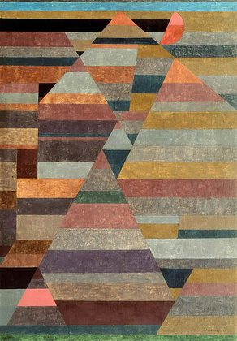

Paul Klee,1879 – 1940,"Expressionism,Abstractionism,Surrealism","German,Swiss","Paul Klee (German: [paʊ̯l ˈkleː]; 18 December 1879 – 29 June 1940) was a Swiss German artist. His highly individual style was influenced by movements in art that included Expressionism, Cubism, and Surrealism. Klee was a natural draftsman who experimented with and eventually deeply explored color theory, writing about it extensively; his lectures Writings on Form and Design Theory (Schriften zur Form und Gestaltungslehre), published in English as the Paul Klee Notebooks, are held to be as important for modern art as Leonardo da Vinci's A Treatise on Painting for the Renaissance. He and his colleague, Russian painter Wassily Kandinsky, both taught at the Bauhaus school of art, design and architecture. His works reflect his dry humor and his sometimes childlike perspective, his personal moods and beliefs, and his musicality.",https://en.wikipedia.org/wiki/Paul_Klee,188
